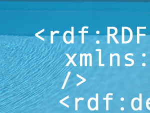

9 Jun 2004
9 Jun 2004
First Posted

RDF Support at vbAccelerator.com
vbAccelerator pages now include support for RDF tags which describe meta-data and licensing conditions for the articles and code. This article describes the RDF tagging that's provided and some details of the implementation.
RDF Tagging vbAccelerator Pages
RDF (Resource Description Framework) aims to provide a means by which the information on a web page can be understood by a computer semantically rather than just in terms of its presentation.
Links from an article to the article's RDF is achieved using a link rel tag, as described in this FAQ by the RDFCore Working Group. Therefore in a page's metadata you will find something like this:
<link rel="meta" type="application/rdf+xml" href="article.rdf" />
For downloadable zip files, the RDF is provided as a .rdf file with the same name as the zip itself.
The RDF that is currently provided contains two sets of information:
- Dublin Core metadata.
- Creative Commons licence information.
A brief description of the contents of these tags follows.
Dublin Core MetaData
The Dublin Core aims to provide some simple descriptive metadata about a piece of work such as it's author, title, description, publication date and what it is related to. The format of the tags follows the Dublin Core XML guidelines, which can be summarised as follows:
- Implementors should base their XML applications on XML Schemas.
- Implementors should use XML Namespaces [XMLNS] to uniquely identify DC elements, element refinements and encoding schemes.
- Implementors should encode properties as XML elements and values as the content of those elements. The name of the XML element should be an XML qualified name (QName) which associates the element name with the appropriate DCMI namespace name.
- The property names for the 15 DC elements should be all lower-case.
- Multiple property values should be encoded by repeating the XML element for that property.
Therefore a typical RDF structure for an article will look like this:
<rdf:RDF
xmlns:rdf="://www.w3.org/1999/02/22-rdf-syntax-ns#"
xmlns:dc="http://purl.org/dc/elements/1.1/" />
<rdf:Description rdf:about="http://vbaccelerator.com/article.asp?id=14451">
<dc:title>Wav File Viewer Control</dc:title>
<dc:creator>Steve McMahon</dc:creator>
<dc:subject>VB5; VB6; Code; Control; ActiveX; COM</dc:subject>
<dc:description>This article demonstrates how to read and display a 16-bit Stereo WaveForm using a memory buffer and Multimedia file I/O. Good performance and ease of use is achieved by using SAFEARRAYs to make a memory buffer look like an array in VB. The sample is currently limited to stereo 16-bit wave files, but the same techniques can be applied easily to mono and/or 8-bit files, and, with a bit more effort, to 24-bit files. </dc:description>
<dc:date>2004-04-16</dc:date>
<dc:publisher>vbAccelerator Ltd</dc:publisher>
<dc:identifier>http://vbaccelerator.com/article.asp?id=14451</dc:identifier>
<dc:relation>http://vbaccelerator.com/article.asp?id=17</dc:relation>
<dc:relation>http://vbaccelerator.com/article.asp?id=2185</dc:relation>
<dc:relation>http://vbaccelerator.com/article.asp?id=17</dc:relation>
<dc:relation>http://vbaccelerator.com/article.asp?id=3017</dc:relation>
</rdf:Description>
</rdf:RDF>
The relation tags for an article point to related articles. For a zip file, the relation tags point to the article that the Zip file is associated with and to any other dependent zips.
Creative Commons Licence Information
Creative Commons have defined an RDF structure which allows each of their licences to be represented in RDF. Typically, content on the site is licensed under the Attribution licence however, in a minority of cases the code re-uses code provided under the LGPL or the GPL licence.
More information about RDF tags is available from the Creative Commons site, however, an example of the Attribution licence is provided below
<rdf:RDF
xmlns:rdf="://www.w3.org/1999/02/22-rdf-syntax-ns#"
xmlns:cc="http://web.resource.org/cc/" />
<cc:Work rdf:about="http://vbaccelerator.com/article.asp?id=14451">
<cc:license rdf:resource="http://creativecommons.org/licenses/by/1.0/" />
</cc:Work>
<cc:License rdf:about="http://creativecommons.org/licenses/by/1.0/">
<cc:permits rdf:resource="http://web.resource.org/cc/Reproduction" />
<cc:permits rdf:resource="http://web.resource.org/cc/Distribution" />
<cc:requires rdf:resource="http://web.resource.org/cc/Notice" />
<cc:requires rdf:resource="http://web.resource.org/cc/Attribution" />
<cc:permits rdf:resource="http://web.resource.org/cc/DerivativeWorks" />
</License>
</rdf:RDF>
Note that the License tag provides sufficient information to render a simple human readable version of the licence, but doesn't include the full legal information.
On RDF
Although the site supports RDF, there are some problems with it in my opinion:
- RDF is a bit too hard. One of the best and widely used applications of XML is RSS. The reason for this is obvious: it's called Really Simple Syndication and it is indeed Really Simple to implement and use. RDF is frequently not at all simple, and makes it more than possible to create a world that is perfectly semantically described but no-one else has the slightest idea how to understand.
- Semantic tagging is extraordinarily difficult, and gets more so
the closer you look at the information you're trying to understand. It's all very well
saying for example that a piece of data represents a price, and therefore you can tag it with
an attribute that price="x". But in reality, the price differs depending on who you are, when
you look at it, what type of contract you enter into, whether it is a Sunday and so on. In some contexts,
the value might not even represent a price at all!
Even things which are fairly trivial, such as the Dublin Core information about authors, titles, dates and so on, are often a minefield. What if one of the authors merely suggested the idea? Does the date represent the publication, modification or embargo date? What should really go into the controlled vocabulary list in the subject tag? Even simply deciding you want to include Dublin Core tags requires a considerable amount of research to find out how to represent them, and you'll discover that there are many implementations which use different structures to represent the same thing.
When simple and well-defined vocabularies are created, however, RDF can be both useful and easy to use. An example of this is the Creative Commons licence tags.
Conclusion
This article has described the RDF tagging provided on the site and provided some background information on the Dublin Core and Creative Commons RDF tags.